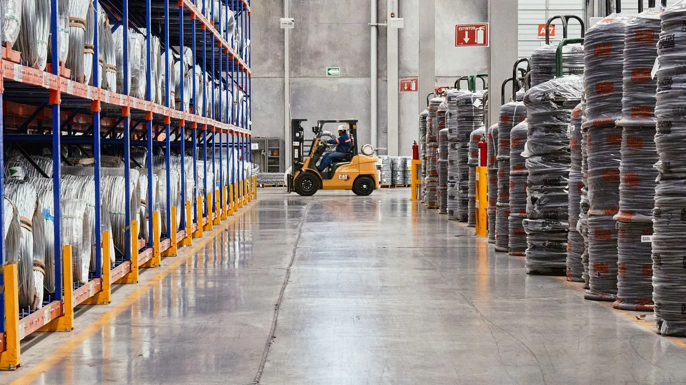

En Chile, quien necesita vender maquinaria agroindustrial usada se encuentra con un mercado de dos velocidades: ciertos equipos encuentran comprador en semanas, mientras otros se quedan meses — a veces años — acumulando polvo en un galpón. La diferencia no está en la marca ni en el precio de lista que tuvo el equipo cuando era nuevo: está en qué tan versátil es, si tiene repuestos disponibles, en qué estado llegan sus tableros de control y si forma parte de una línea completa o de un fragmento que quedó suelto. Esa misma lógica se repite en el mercado internacional de equipos de procesamiento de alimentos, según los datos más recientes del sector.

Lo que se vende rápido: versatilidad, repuestos y controles al día
El informe 2026 FMCG Surplus Asset Market Trends, de Liquidity Services, describe un mercado de dos niveles para el equipo excedente de la industria de alimentos y bebidas: el avance de la automatización separa con claridad lo que se vende rápido de lo que no. Llenadoras de generación reciente, máquinas de formado-llenado-sellado (FFS), paletizadoras y etiquetadoras con visión artificial —equipo que se puede conectar a sistemas de control modernos— son las que logran mejor precio y encuentran comprador primero. El mismo informe documenta el otro lado: el cierre o achicamiento de plantas de compañías como Tyson, General Mills y MGP Ingredients, que redirigieron inversión hacia plantas de mayor rendimiento y más digitalizadas, liberó al mercado secundario líneas de embotellado, llenadoras, mezcladoras y celdas de empaque completas —justo el tipo de equipo que retiene más valor cuando se vende como conjunto operativo y no como piezas sueltas.
Las casas de remate especializadas en equipo industrial de alimentos confirman el mismo criterio desde el otro extremo del mercado. Una subasta de 2026 de una planta de conservas vegetales en los Países Bajos ofrecía maquinaria de lavado, transporte, mezclado, almacenamiento y empaque que el propio vendedor describía como apta también para otros cultivos y productos, no solo para el que fabricaba esa planta. Ese tipo de equipo de propósito general —que un comprador puede reconvertir a su propia línea sin reinventar el proceso— es el que primero encuentra interesado.
Lo que se queda parado: equipo específico, sin soporte local y líneas incompletas
Del otro lado están las líneas muy específicas. En remates de plantas cárnicas de ese mismo año aparecen picadoras, inyectoras, embutidoras y tambores de volteo diseñados para una sola línea de cecinas: equipo que solo sirve para fabricar exactamente lo mismo que fabricaba el dueño anterior, con un universo de compradores mucho más chico. Algo parecido ocurre con los lotes de plantas lácteas que cierran: silos, pasteurizadores y tinas de cuajada llegan al mercado como parte del cierre completo de una planta, y el comprador tiene que evaluarlos pieza por pieza porque la línea ya no existe como conjunto.
Las cuatro variables que deciden si un equipo se mueve rápido
- Versatilidad. Un equipo que sirve para más de un producto o formato tiene muchos más compradores potenciales que uno diseñado para una sola receta.
- Repuestos y soporte técnico local. Una marca con representación en Chile vale más que una de origen sin soporte, aunque el equipo sea idéntico en años y horas de uso.
- Estado del tablero y los controles. La mecánica aguanta décadas; un PLC descontinuado o un variador sin soporte obliga a una actualización cara que el comprador descuenta del precio antes de ofertar.
- Línea completa versus equipo suelto. Un conjunto que se puede instalar y poner a producir de inmediato vale considerablemente más que las mismas máquinas vendidas una por una.
Por qué la automatización manda el precio
El Processing State of the Industry Report 2026, publicado en mayo de 2026 por las asociaciones PMMI y FPSA, valora el mercado estadounidense de maquinaria de procesamiento de alimentos y bebidas en USD 6.200 millones en embarques durante 2025 —un alza de 3,2% sobre 2024—, con una proyección de USD 6.700 millones para 2027. Carne y aves de corral concentran el 29,2% de ese mercado, alimentos preparados el 14% y lácteos el 12,4%. Entre las tendencias que el informe identifica para explicar el gasto en equipo nuevo está la escasez persistente de mano de obra, que empuja a las plantas a automatizar. Es la misma escasez la que, en el mercado de equipo usado, hace que una máquina capaz de integrarse a un sistema de control moderno valga más que una idéntica que no puede hacerlo.
¿Qué significa esto para el sector? — La mirada de Prunavita
Esto confirma lo que vemos al trabajar con maquinaria agroindustrial usada en Chile: el precio no lo fija la antigüedad del equipo, lo fija qué tan fácil es para el comprador ponerlo a producir sin sorpresas. Por eso, cuando una planta nos consulta porque quiere vender maquinaria agroindustrial sin que se quede parada perdiendo valor, lo primero que miramos es exactamente eso: si sirve para más de un producto, si tiene repuestos disponibles en Chile, en qué estado está el tablero y si se puede ofrecer como línea completa o hay que separarla en piezas. Con esa ficha armada, el equipo se mueve en semanas; sin ella, termina en remate o como chatarra. Si su planta tiene equipo que encaja en esta descripción, trabajamos la evaluación y la intermediación en nuestro servicio de maquinaria agroindustrial.
Y si el comprador o el vendedor está fuera de Chile y necesita a alguien que verifique el equipo en terreno antes de pagar o antes de embarcarlo, ese es nuestro servicio de representación comercial: inspección técnica, fotografías y video del equipo operando, y seguimiento del trámite hasta el retiro o el embarque.
Fuentes consultadas: PMMI / FPSA, Processing State of the Industry Report 2026 y Liquidity Services, 2026 FMCG Surplus Asset Market Trends Report. Análisis y redacción: equipo Prunavita.